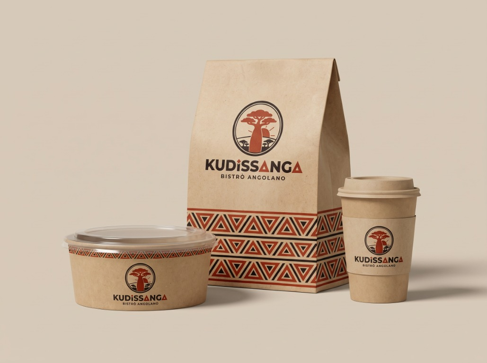
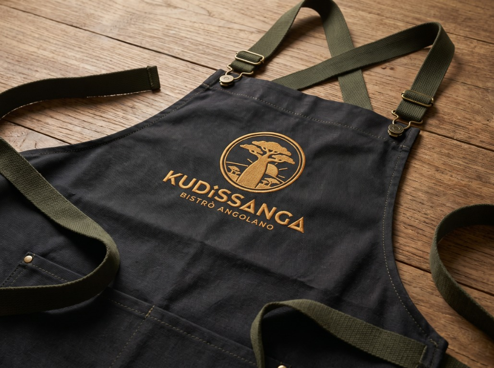
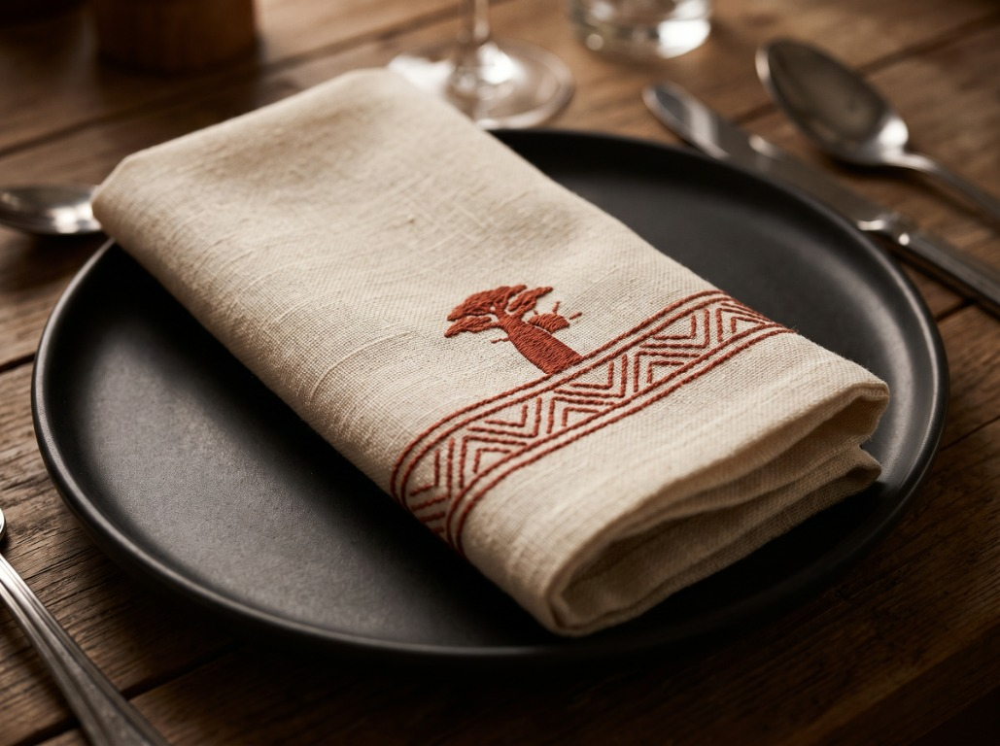
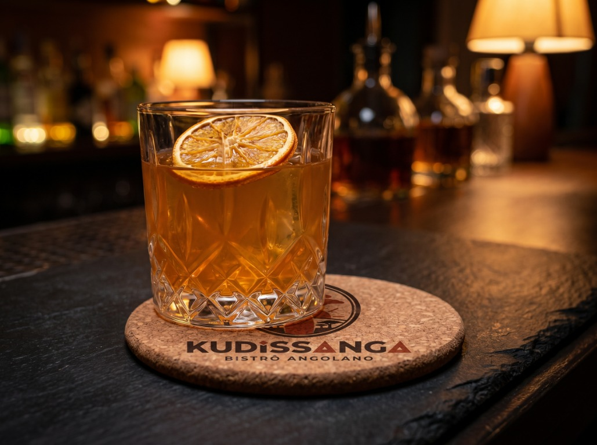
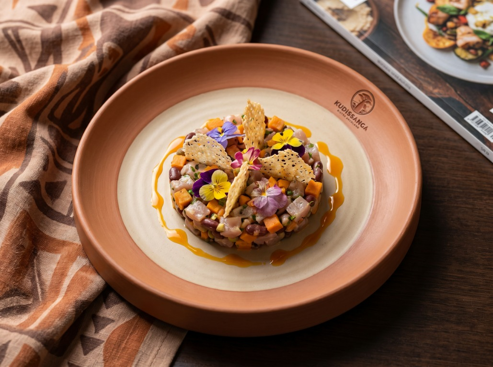
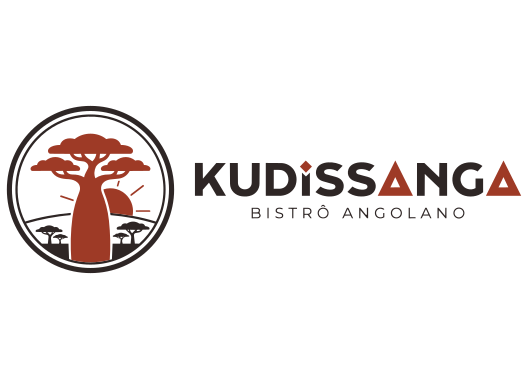
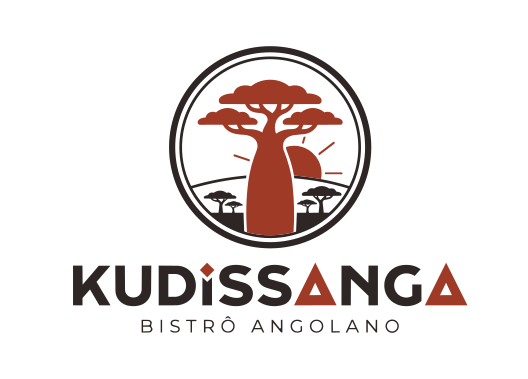

Kudissanga
Bistrô Angolano · Sabores de Angola, com toque contemporâneo.
Construir a identidade de um bistrô angolano contemporâneo pensado para Bauru, valorizando uma culinária pouco representada na região. A marca precisava aproximar ancestralidade e hospitalidade, comunicar uma experiência autoral e funcionar de maneira coesa da fachada ao cardápio.
O conceito reúne três histórias: as raízes gastronômicas de Angola, o imbondeiro como símbolo de encontro e vida comunitária, e “Kudissanga”, palavra apresentada no projeto com o sentido de encontrar-se e reunir-se. O símbolo da árvore ganha um sol em vermelho dendê, enquanto uma forma triangular inspirada na arte Sona Chokwe assina o “A” do nome. Referências Samakaka levam ritmo geométrico às aplicações, sem perder a leitura contemporânea.





#9E3B24#D49B4B#F2ECE1#4E5434#231F20

O imbondeiro representa encontro e partilha. A arte Sona Chokwe e os padrões Samakaka inspiram os grafismos e as aplicações do sistema visual.
“Sabores de Angola, com toque contemporâneo.”Kudissanga · Bistrô Angolano